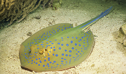
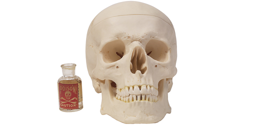

Poisons are chemical compounds that can cause injury, illness, or death when sufficient quantities are absorbed. They cause damage by inhibiting normal chemical reactions occurring in the body. Poisons can cause harm through a single massive dose or after high levels accumulate over time. Poisons are most commonly absorbed through ingestion (eating) and inhalation (breathing).
Prompt treatment combats poisons. Treatments vary according to the specific type of poison absorbed. If a poisoning is not treated swiftly, permanent damage or death is possible. Organ damage caused by poisons is often repairable; however, when a poison targets the brain or spinal cord, damage is often permanent. Poisons that are ingested in large doses are usually identifiable by the distinct symptoms that each causes. Poisons that are administered more gradually or in smaller doses can be a problem to identify because their symptoms are initially very similar to a wide variety of diseases.
Toxins are poisonous compounds produced in living organisms (such as substances released by certain mushroom species or released by bacteria that cause tetanus or botulism). Even at very low concentrations, toxins can typically affect humans and often are detectable using only sensitive analytical instruments. Some toxins have antidotes and others do not. Animal toxins such as those from snakes, insects, or stingrays, are known as venoms and cause their effect through injection (sting or bite).
Examples of Venomous Animals: Snake and Stingray

In September 2006, Australian celebrity, Steve Irwin (The Crocodile Hunter), died suddenly at the age of 44 after being fatally pierced in the heart with the barbed, venomous stinger of a stingray’s tail.
Human deaths due to stingray attacks are extremely rare because stingrays generally do not attack. Rather, they tend to swim away when threatened. Humans are usually stung in the feet after accidentally stepping on stingrays. When this happens, the stinger often breaks off causing an open wound, pain, and swelling from the venom in the stinger. Death from a stingray wound is rare because, despite the venom being a powerful nerve toxin that affects the heart, it is easily broken down by heat (such as most fish toxins). Therefore, initial treatment of a stingray wound is simply immersion in hot water for 30 to 90 minutes.